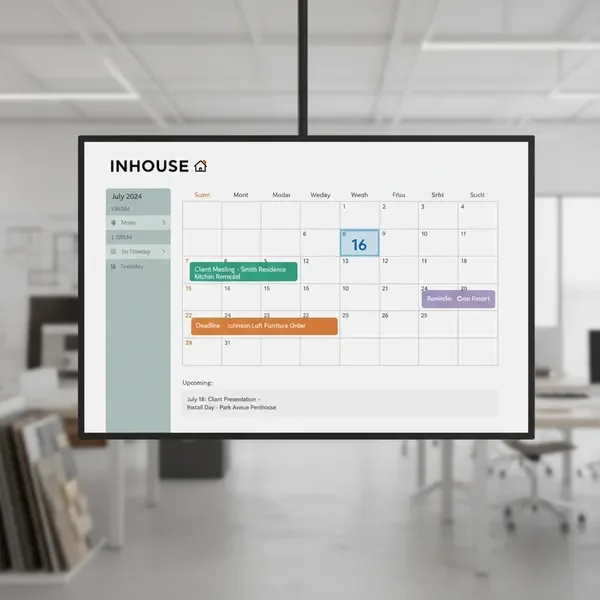

איך INHOUSE עובדת?
1
הוסיפו לקוחות
כל הלידים נכנסים אוטומטית למערכת מכל המקומות האפשריים ומקבלים מענה מיידי בעזרת בוטים מותאמים אישית
2
נהלו פרויקטים
צרו משימות, הגדירו לוחות זמנים, והקצו אחריות לחברי צוות. עקבו אחרי ההתקדמות בזמן אמת.
3

תקשרו בקלות
שלחו הודעות וואטסאפ אוטומטיות, תזכורות ועדכונים ללקוחות. CRM למעצבי פנים עם אינטגרציה מלאה.
4
עקבו אחרי הצלחה
צפו בדוחות מפורטים על פעילות הסטודיו, הכנסות והתקדמות פרויקטים. קבלו תובנות שיעזרו לכן לצמוח.